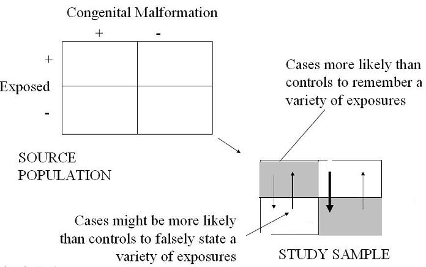

Example of Differential Misclassification Bias
Lead Author(s): Jeff Martin, MD
Differential Misclassification of Exposure Variables
One of the classic examples of differential misclassification of exposure are studies of exposures during pregnancy and congenital malformations.
Schematic of Differential Misclassification

Differential Sensitivity and Specificity of Exposure Measurement
In these studies first, we may have differential recall of various exposures during pregnancy,
- with cases less apt to forget things and controls more apt to forget things,
- i.e. differential sensitivity of the exposure measurement.
Second, we may have differential specificity.
- The cases may tend to recall things that truly did not happen.
Result: Overestimation
The result of all of this is that there is overestimation of the association between the exposure and the outcome.